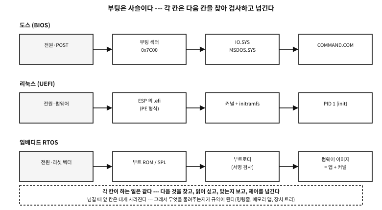

부록 L — 기계가 깨어나는 순서: 부팅과 부트로더
55장에서 「main 을 누가 부르는가」를 물었고, 답은 운영체제였다. 그러면 운영체제는 누가 부르는가. 이 부록은 그 물음을 따라 전원 스위치까지 내려간다.
세부는 기계마다 다르고, 다 알 필요도 없다. 대신 한 문장을 붙잡으면 어떤 기계의 부팅이든 읽어 낼 수 있다. 부팅은 사슬이고, 각 칸이 하는 일은 같다 — 다음 것을 찾고, 읽어 싣고, 맞는지 보고, 제어를 넘긴다.

그림 105.1 — 부팅의 사슬 — 기계는 달라도 각 칸이 하는 일은 같다.
플랫폼 노트. 이 부록의 근거
전원이 들어오면#
CPU 는 아무것도 모르는 채로 깨어난다. 기억에는 쓰레기가 있고, 장치는 초기화되어 있지 않으며, 「프로그램」이라는 개념도 아직 없다. CPU 가 아는 것은 하나다 — 정해진 주소를 읽어 거기서부터 실행한다. 「OS 없이 도는 C」 부록에서 본 리셋 벡터가 그것이다.
그 정해진 자리에는 대개 ROM 이 배선되어 있고, 거기 든 프로그램을 펌웨어라 부른다. PC 라면 BIOS 또는 UEFI 펌웨어이고, 작은 칩이라면 제조사가 넣어 둔 부트 ROM 이다.
| 무엇 | 왜 |
|---|---|
| 자기 검사(POST)와 기억 초기화 | DRAM 은 설정해 주어야 쓸 수 있다 — 그 전에는 기억이 없다시피 하다 |
| 장치를 최소한만 깨우기 | 디스크나 USB 에서 다음 단계를 읽어야 하니까 |
| 다음 단계를 찾기 | 어느 장치의 어느 자리에서 무엇을 읽을지가 곧 「부팅 순서」다 |
| 읽은 것을 검사하기 | 서명 검사(보안 부팅)나 서명 없는 옛 방식의 마지막 두 바이트 |
| 제어를 넘기기 | 넘기고 나면 대개 자기는 사라진다 |
표 105.1 — 펌웨어가 하는 일
BIOS 시대 — 512바이트가 전부였다#
옛 PC 의 방식은 놀랄 만큼 단순하다. BIOS 는 부팅 장치의 첫 섹터 512바이트를 주소 0x7C00 에 싣고, 그 끝 두 바이트가 0x55 0xAA 인지 보고, 맞으면 그리로 뛴다. 그게 전부다. 그 512바이트를 부팅 섹터, 디스크 전체의 첫 섹터를 MBR(master boot record)이라 부른다.
직접 만들어 보면 자리 나눔이 눈에 들어온다. 다만 무엇을 만드는지를 먼저 분명히 해 두자.
플랫폼 노트. 이 시연이 하는 일과 하지 않는 일
이 프로그램은 디스크를 건드리지 않는다. 파일을 열배치도, 장치를 만지배치도, 무엇을 쓰배치도 않는다. 하는 일은 하나다 — 기억 속에 unsigned char mbr[512] 라는 배열 하나를 두고, 그것을 옛 규약 그대로 채운 다음, 자기가 채운 것을 다시 읽어 해독해 보인다. 곧 「디스크의 첫 섹터가 어떻게 생겼는가」를 말로 설명하는 대신 바이트로 지어 보이는 것이다.
그래서 컴파일해서 돌리면 글자만 나오고 끝난다. 특권도 필요 없고, 남는 파일도 없고, 부작용도 없다. 이 512바이트로 실제 디스크를 부팅 가능하게 만들려면 그것을 장치의 0번 섹터에 써야 하는데, 이 예제는 일부러 그 단계를 하지 않는다 — 남의 기계를 망가뜨릴 수 있는 코드는 이 책에 싣지 않는다.
examples/apx-boot/disk_layout.c
/* 디스크의 첫 섹터에 무엇이 있는가 --- 직접 만들어 보고, 다시 읽어 본다.
주의: 이 프로그램은 디스크를 건드리지 않는다. 파일도 장치도 열지 않고, 아무것도 쓰지
않는다. 기억 속의 배열 하나를 옛 규약 그대로 채운 뒤, 그 배열을 다시 읽어 해독해
화면에 찍을 뿐이다. 돌리면 글자만 나오고 끝난다.
여기서 만드는 바이트는 진짜 규칙을 따른다: 512바이트, 0x1BE 의 파티션 표 네 칸,
그리고 끝의 0x55 0xAA. GPT 를 쓰는 디스크의 첫 섹터(보호 MBR)와 EFI PART 헤더도
같이 만든다. 이 바이트를 실제 디스크의 0번 섹터에 쓰는 일은 하지 않는다. */
#include <stdio.h>
#include <stdint.h>
#include <string.h>
static uint32_t crc32(const void *buf, size_t n)
{
const unsigned char *p = buf;
uint32_t c = 0xFFFFFFFFu;
for (size_t i = 0; i < n; i++) {
c ^= p[i];
for (int k = 0; k < 8; k++)
c = (c >> 1) ^ (0xEDB88320u & (uint32_t)-(int32_t)(c & 1));
}
return c ^ 0xFFFFFFFFu;
}
static void put32(unsigned char *p, uint32_t v)
{ p[0] = v & 0xff; p[1] = v >> 8 & 0xff; p[2] = v >> 16 & 0xff; p[3] = v >> 24; }
static void put_part(unsigned char *e, uint8_t boot, uint8_t type,
uint32_t lba, uint32_t count)
{
e[0] = boot; /* 0x80 이면 「이것으로 부팅」 */
e[1] = 0xfe; e[2] = 0xff; e[3] = 0xff; /* 옛 CHS 자리 --- 이제는 채우는 시늉만 한다 */
e[4] = type;
e[5] = 0xfe; e[6] = 0xff; e[7] = 0xff;
put32(e + 8, lba); /* 시작 --- 이쪽이 진짜로 쓰인다 */
put32(e + 12, count);
}
static void hexdump(const unsigned char *p, size_t off, size_t n)
{
for (size_t i = 0; i < n; i += 16) {
printf(" %04zx ", off + i);
for (size_t j = 0; j < 16; j++) printf("%02x%s", p[off + i + j], j == 7 ? " " : " ");
printf("\n");
}
}
int main(void)
{
unsigned char mbr[512] = { 0 };
/* (1) 부트스트랩 자리 --- 446바이트. 진짜 부트로더의 첫 조각이 여기 들어간다. */
memcpy(mbr, "\xfa\x31\xc0\x8e\xd8\x8e\xd0\xbc\x00\x7c", 10); /* cli; 세그먼트·스택 차리기 */
printf("how the first sector divides up\n");
printf(" 0x000 - 0x1bd : bootstrap code, %d bytes\n", 0x1be);
printf(" 0x1be - 0x1fd : partition table --- 16 bytes x 4 entries\n");
printf(" 0x1fe - 0x1ff : signature 0x55 0xaa\n\n");
/* (2) 파티션 표 --- 흔한 배치 하나를 적어 둔다 */
put_part(mbr + 0x1be, 0x80, 0x83, 2048, 1024000); /* 부팅 가능, 리눅스 */
put_part(mbr + 0x1ce, 0x00, 0x82, 1026048, 262144); /* 리눅스 스왑 */
mbr[510] = 0x55; mbr[511] = 0xaa;
printf("the partition table (from 0x1be)\n");
hexdump(mbr, 0x1be, 32);
printf("\n entry 1: bootable %s · type 0x%02x (Linux) · start LBA %u · %u sectors (%u MiB)\n",
mbr[0x1be] == 0x80 ? "yes" : "no", mbr[0x1be + 4],
2048u, 1024000u, 1024000u / 2048u);
printf(" entry 2: bootable %s · type 0x%02x (swap) · start LBA %u\n\n",
mbr[0x1ce] == 0x80 ? "yes" : "no", mbr[0x1ce + 4], 1026048u);
printf("the last two bytes: %02x %02x --- %s\n\n", mbr[510], mbr[511],
(mbr[510] == 0x55 && mbr[511] == 0xaa)
? "the BIOS accepts this as a boot sector only with these" : "not a boot sector");
/* (3) GPT 를 쓰는 디스크의 첫 섹터 --- 보호 MBR */
unsigned char pmbr[512] = { 0 };
put_part(pmbr + 0x1be, 0x00, 0xee, 1, 0xffffffffu); /* 0xEE = 「여기부터 끝까지 남의 것」 */
pmbr[510] = 0x55; pmbr[511] = 0xaa;
printf("the protective MBR (first sector of a GPT disk)\n");
printf(" partition type 0x%02x --- it tells old tools the disk is fully used\n",
pmbr[0x1be + 4]);
printf(" the reason: to stop a tool that does not know GPT taking it for empty\n\n");
/* (4) 진짜 지도는 두 번째 섹터(LBA 1)에 있다 --- GPT 헤더 */
unsigned char gpt[92] = { 0 };
memcpy(gpt, "EFI PART", 8);
put32(gpt + 8, 0x00010000u); /* 개정 1.0 */
put32(gpt + 12, 92); /* 헤더 크기 */
put32(gpt + 16, 0); /* CRC 자리는 0 으로 두고 계산한다 */
put32(gpt + 16, crc32(gpt, 92));
printf("the GPT header (LBA 1)\n");
printf(" signature : %.8s\n", gpt);
printf(" header CRC32: 0x%08x --- it checks itself (this field is zero while computing)\n",
(unsigned)(gpt[16] | gpt[17] << 8 | gpt[18] << 16 | (uint32_t)gpt[19] << 24));
printf(" and the same table exists once more at the very end of the disk, to survive damage\n");
return 0;
}
실행 결과
how the first sector divides up
0x000 - 0x1bd : bootstrap code, 446 bytes
0x1be - 0x1fd : partition table --- 16 bytes x 4 entries
0x1fe - 0x1ff : signature 0x55 0xaa
the partition table (from 0x1be)
01be 80 fe ff ff 83 fe ff ff 00 08 00 00 00 a0 0f 00
01ce 00 fe ff ff 82 fe ff ff 00 a8 0f 00 00 00 04 00
entry 1: bootable yes · type 0x83 (Linux) · start LBA 2048 · 1024000 sectors (500 MiB)
entry 2: bootable no · type 0x82 (swap) · start LBA 1026048
the last two bytes: 55 aa --- the BIOS accepts this as a boot sector only with these
the protective MBR (first sector of a GPT disk)
partition type 0xee --- it tells old tools the disk is fully used
the reason: to stop a tool that does not know GPT taking it for empty
the GPT header (LBA 1)
signature : EFI PART
header CRC32: 0x36425678 --- it checks itself (this field is zero while computing)
and the same table exists once more at the very end of the disk, to survive damage
시연은 네 걸음으로 간다.
- 자리를 선언한다. 512바이트를 446 + 16×4 + 2 로 나누어 찍는다. 맨 앞에 넣는 열 바이트(
fa 31 c0 8e d8 …— 인터럽트를 끄고 세그먼트와 스택을 차리는 코드)는 진짜 부트로더의 첫머리가 대개 어떤 모양인지 보이려는 것이지, 도는 부트로더가 아니다. - 파티션 항목 둘을 규약대로 적는다. 부팅 표시
0x80, 종류0x83(리눅스)과0x82(스왑), 시작 LBA 와 섹터 수를 작은 끝 차례의 4바이트로. 옛 CHS 자리는 요즘 관례대로fe ff ff로 채운다 — 「CHS 로는 못 적는 크기」라는 뜻의 관용 값이다. 그리고 510·511 번 바이트에55 aa를 둔다. - 자기가 적은 것을 다시 읽는다. 그 64바이트를 16진수로 찍고, 같은 바이트에서 「부팅 가능 · 종류 0x83 · 시작 LBA 2048 · 500 MiB」를 도로 꺼낸다. 쓰기와 읽기가 같은 규약을 쓰는지가 그 자리에서 드러난다.
- GPT 쪽도 같은 방식으로 지어 본다. 종류
0xEE하나로 디스크를 덮는 보호 MBR 을 만들고,EFI PART서명이 붙은 92바이트 헤더를 만들어 CRC 자리를 0 으로 둔 채 CRC32 를 계산해 그 자리에 써 넣는다 — 규격이 정한 그대로다. 출력에 나온0x36425678은 그렇게 계산된 진짜 값이다. 다만 GUID 와 LBA 필드들은 0 이므로 모양을 보이는 표본이지 쓸 수 있는 GPT 헤더는 아니다.
여기서 얻는 것은 「어느 필드가 몇 번째 바이트인가」가 아니다. 446바이트라는 숫자 하나다. 그 좁은 자리가 뒤의 모든 것을 설명한다.
| 자리 | 크기 | 무엇 |
|---|---|---|
0x000 | 446바이트 | 부트스트랩 코드 — 부트로더의 첫 조각밖에 못 들어간다 |
0x1BE | 16바이트 × 4 | 파티션 표 — 그래서 기본 파티션이 넷뿐이었다 |
0x1FE | 2바이트 | 0x55 0xAA — 이것이 없으면 부팅 섹터가 아니다 |
표 105.2 — MBR 512바이트의 자리 나눔
446바이트에 운영체제를 읽어 들이는 코드가 들어갈 리 없다. 그래서 옛 부트로더는 전부 여러 단계로 쪼개졌다 — 첫 조각은 「둘째 조각이 어디 있는지」만 알고, 둘째 조각이 파일 시스템을 읽을 줄 알며, 그다음이 커널을 싣는다.
흔한 오해. MBR 은 파티션 표다
디스크의 배치도 — MBR 에서 GPT 로#
파티션 넷과 32비트 LBA(2 TiB 한계)는 곧 좁아졌다. 그 자리를 GPT(GUID Partition Table)가 대신한다. 위 시연의 뒷부분이 그 이야기다.
- 첫 섹터에는 여전히 MBR 이 있다. 다만 파티션 하나가 종류
0xEE로 디스크 전체를 덮고 있다 — 보호 MBR. GPT 를 모르는 옛 도구가 「빈 디스크」로 알고 덮어쓰는 것을 막으려는 장치다. - 진짜 배치도는 두 번째 섹터(LBA 1)의 GPT 헤더에 있다. 서명이
EFI PART이고, 자기 자신의 CRC32 를 담으며, 같은 표가 디스크 맨 끝에 한 벌 더 있다.
이 두 방식의 필드 하나하나와 파티션 안의 파일 시스템까지는 「디스크는 어떻게 나뉘어 있는가」 부록이 표로 다룬다. 여기서는 사슬 이야기에 필요한 만큼만 본다.
★ 옛 방식과 새 방식의 차이가 두 낱말로 요약된다 — 검사와 사본. 0x55 0xAA 두 바이트가 하던 「맞는가」를 CRC 가 대신하고, 한 벌뿐이던 표가 두 벌이 되었다. 신뢰성 설계는 대체로 이 두 가지의 되풀이다.
UEFI — 펌웨어가 파일 시스템을 읽는다#
UEFI 는 「512바이트」라는 제약 자체를 없앤다. 펌웨어가 FAT 파일 시스템을 읽을 줄 알고, 디스크의 한 파티션(ESP, EFI System Partition)에서 실행 파일을 찾아 그냥 실행한다.
여기서 앞 부록과 이어진다. 그 실행 파일은 PE 형식이다 — 윈도우 실행 파일과 같은 옷을 입었고, 헤더의 서브시스템 필드만 「UEFI 응용」으로 되어 있다. 파일 이름도 약속되어 있어서, 아무 설정이 없으면 \EFI\BOOT\BOOTX64.EFI 를 찾는다.
| BIOS | UEFI | |
|---|---|---|
| 다음 단계를 어떻게 찾나 | 첫 섹터를 통째로 읽는다 | ESP 에서 파일을 읽는다 |
| 크기 제한 | 512바이트 | 사실상 없다 |
| 형식 | 날 바이트 | PE 실행 파일(.efi) |
| 실행 모드 | 16비트 실 모드 | 64비트 — 처음부터 |
| 무엇을 물려주나 | 거의 아무것도 | 기억 배치표, 장치 접근 서비스(부트 서비스) |
| 검증 | 0x55 0xAA | 서명(보안 부팅) — 하거나, 끄거나 |
표 105.3 — BIOS 방식과 UEFI 방식
문. UEFI 가 파일을 실행할 수 있다면, 부트로더는 왜 아직 필요한가?
답. 꼭 필요하지는 않다. 리눅스 커널은 스스로 .efi 실행 파일이 될 수 있고(EFI 스텁), 그러면 펌웨어가 커널을 직접 띄운다. 부트로더가 남아 있는 이유는 「고르기」와 「물려주기」다 — 여러 커널·여러 운영체제 중 무엇을 띄울지, 어떤 명령줄과 어떤 initramfs 를 함께 줄지를 다루는 자리가 필요하기 때문이다.
부트로더가 실제로 하는 일#
이름은 여럿이지만 하는 일은 표 105.1의 뒷부분과 같다. 그런데 그 「같은 일」을 어떻게 해내는지가 방식마다 꽤 다르고, 실무에서 부딪히는 문제는 대부분 그 차이에서 나온다. 하나씩 연다.
| 이름 | 어디서 | 특징 |
|---|---|---|
| GRUB | 리눅스 배포판 기본 | 여러 단계 · 파일 시스템을 읽는다 · 메뉴와 설정 |
| systemd-boot | UEFI 전용 | 아주 얇다 — 펌웨어가 이미 파일을 읽으니 그 위에 얹기만 |
윈도우 bootmgr | 윈도우 | BCD 라는 설정 저장소를 읽어 고른다 |
| U-Boot | 임베디드 리눅스 | SPL(작은 첫 조각) → 본체 · 장치 트리를 커널에 물려준다 |
| MCUboot | 마이크로컨트롤러 | 서명 검사 · 슬롯 둘 · 실패하면 되돌리기 |
| EFI 스텁 | 리눅스 커널 자신 | 커널이 곧 .efi — 부트로더 없이 뜬다 |
표 105.4 — 흔히 만나는 부트로더
왜 여러 단계인가 — 446바이트의 그늘#
옛 BIOS 방식에서 첫 조각에 허락된 자리는 446바이트다 — 512바이트 가운데 파티션 표와 서명을 뺀 나머지다(자리 나눔의 전체 표는 「디스크는 어떻게 나뉘어 있는가」 부록에 있다). 파일 시스템을 읽는 코드가 그 안에 들어갈 리 없다. 그래서 부트로더는 쪼개진다.
| 단계 | 어디에 사는가 | 크기 | 무슨 일을 하나 |
|---|---|---|---|
boot.img | MBR 의 446바이트 | 446바이트 | 다음 조각의 첫 섹터 번호 하나만 알고 그것을 읽어 뛴다 |
core.img | MBR 뒤의 빈 자리(MBR 간극), 또는 GPT 의 BIOS 부팅 파티션 | 수십 KiB | 압축을 풀고, 파일 시스템 모듈을 실어 /boot 를 읽을 수 있게 된다 |
모듈 · grub.cfg | 보통 /boot/grub (진짜 파일 시스템 안) | 수 MiB | 메뉴를 그리고, 커널과 initramfs 를 골라 싣는다 |
표 105.5 — GRUB(옛 BIOS 방식)의 단계
★ 둘째 줄이 핵심이다. boot.img 는 파일 이름으로 다음 조각을 찾지 못한다 — 파일 시스템을 모르니까. 대신 섹터 번호를 박아 둔다. 그래서 core.img 가 놓일 「파일 시스템 바깥의 빈 자리」가 필요하다.
| 디스크 방식 | 그 자리 | 크기 |
|---|---|---|
| MBR (요즘 정렬) | LBA 1 ~ 2047 — 첫 파티션 앞의 빈 곳(「MBR 간극」) | 약 1 MiB |
| MBR (옛 63섹터 정렬) | LBA 1 ~ 62 | 약 31 KiB — 모자라는 일이 있었다 |
| GPT | 종류 GUID 21686148-… 인 BIOS 부팅 파티션 | 보통 1 MiB |
표 105.6 — core.img 가 사는 자리
문. GPT 디스크에 왜 「BIOS 부팅 파티션」이라는 빈 파티션이 필요한가?
답. GPT 는 LBA 1 부터 34 까지를 제 배치도로 쓴다. 옛 MBR 간극이 사라진 것이다. 그런데 옛 BIOS 로 부팅하려면 core.img 를 파일 시스템 바깥에 두어야 한다. 그래서 「아무도 포맷하지 않는 1 MiB 짜리 파티션」을 하나 만들어 그 안에 넣는다. 파일이 아니라 섹터 로 접근하므로, 안이 비어 보이는 것이 정상이다.
반례. 블록 목록으로 커널을 가리키게 해 둔다
UEFI 경로 — 이름과 변수로 찾는다#
UEFI 에서는 이 모든 우회가 사라진다. 펌웨어가 FAT 를 읽을 줄 알기 때문에, 부트로더는 그냥 파일이다(디스크 부록의 ESP 항목 참고).
| 차례 | 무엇을 보나 | 메모 |
|---|---|---|
| 1 | NVRAM 의 BootOrder 변수 | Boot0001, Boot0003 … 시도할 차례가 적혀 있다 |
| 2 | 각 BootXXXX 변수 | 「어느 장치의 어느 파일」이 들어 있다 (예: ESP 의 \\EFI\\ubuntu\\shimx64.efi) |
| 3 | 없거나 다 실패하면 폴백 | ESP 의 \\EFI\\BOOT\\BOOTX64.EFI — 약속된 이름 |
표 105.7 — UEFI 펌웨어가 다음 것을 찾는 순서
★ 그래서 UEFI 기계에서 「부팅 순서가 사라졌다」는 사고는 디스크가 아니라 메인보드의 변수가 지워진 것이다. 폴백 이름이 있는 이유가 여기 있다 — USB 하나로 아무 기계나 부팅할 수 있는 것도 그 약속 덕이다.
| 차례 | 무엇 | 누가 서명했나 |
|---|---|---|
| 1 | shimx64.efi | 마이크로소프트 — 그래서 대부분의 펌웨어가 믿는다 |
| 2 | grubx64.efi | 배포판 — shim 이 제 열쇠꾸러미로 검사한다 |
| 3 | 커널 | 배포판. 사용자가 만든 모듈은 MOK 로 따로 등록해야 한다 |
표 105.8 — 보안 부팅이 켜져 있을 때 리눅스가 뜨는 길
부트로더 없이 — 리눅스 EFI 스텁#
리눅스 커널 이미지는 그 자체가 PE 실행 파일로 만들어질 수 있다. 그러면 펌웨어가 커널을 직접 실행한다. 얇고 빠르지만 대가가 있다 — 메뉴가 없고, 명령줄과 initramfs 를 누가 정해 주느냐가 문제가 된다(펌웨어 변수에 박아 두거나, 커널에 박아 넣거나).
임베디드 — U-Boot 와 MCUboot#
작은 기계에서는 「램조차 아직 없는」 자리에서 시작한다.
| 단계 | 어디서 도나 | 크기 | 하는 일 |
|---|---|---|---|
| 부트 ROM | 칩 안의 ROM | 고정 | 정해진 장치에서 다음 조각을 읽는다. 바꿀 수 없다 — 신뢰의 뿌리 |
| SPL | 칩 내부 SRAM (수십 KiB) | 작다 | DDR 을 초기화한다. 그래야 큰 것을 실을 수 있다 |
| U-Boot 본체 | DDR | 수백 KiB | 환경 변수(bootcmd)를 읽고, 커널·장치 트리·initramfs 를 실어 넘긴다 |
표 105.9 — U-Boot 계열의 단계
| 장치 | 무엇 | 왜 |
|---|---|---|
| 슬롯 둘 | 실행 중인 이미지와 새 이미지를 각각 둔다 | 갱신이 실패해도 옛것이 남아 있다 |
| 이미지 헤더 | 매직 · 버전 · 크기 | 「여기 진짜 이미지가 있다」 |
| 꼬리표(TLV) | 해시와 서명 | 부트로더가 실행 전에 검사한다 |
| 시험 부팅 | 「이번 한 번만」 새것으로 | 새 이미지가 스스로 확인 표시를 못 하면 다음에 되돌아간다 |
표 105.10 — MCUboot 가 갱신을 안전하게 만드는 방법
넘겨줄 때 무엇을 물려주는가#
사슬의 각 칸은 사라지기 전에 다음 칸에게 짐을 남긴다. 그 짐의 목록이 곧 규약이다.
| 누가 → 누구에게 | 자리 | 무엇 | 메모 |
|---|---|---|---|
| BIOS → 부팅 섹터 | 레지스터 | 부팅한 드라이브 번호 | 그것뿐이다. 기억 배치표는 따로 물어봐야 한다 |
| 부트로더 → 리눅스 커널 | 약속된 구조체 | 명령줄, initramfs 의 자리와 크기, 기억 배치표 | 「부트 프로토콜」이라 부른다 |
UEFI → .efi 응용 | 인자 둘 | 이미지 손잡이, 시스템 표(서비스 목록) | ExitBootServices 를 부르면 부트 서비스는 끝난다 |
| U-Boot → 커널 | 레지스터 | 장치 트리의 주소 | 「이 기계에 무엇이 붙어 있는지」가 그 안에 있다 |
| MCUboot → 응용 | 벡터 표 | 실행할 이미지의 시작 주소 | 스택 포인터와 진입점 |
표 105.11 — 단계가 바뀔 때 넘어가는 것
★ UEFI 줄의 ExitBootServices 를 눈여겨보라. 그 호출 전까지는 펌웨어가 디스크·화면· 네트워크를 대신 다뤄 준다. 부른 뒤에는 그 서비스가 전부 사라지고, 기억 배치표의 사본만 남는다. 「운영체제가 기계를 넘겨받는 순간」이 함수 호출 하나로 정확히 정해져 있는 것이다.
안 뜰 때 — 증상으로 칸을 가린다#
| 증상 | 어느 칸 | 무엇이 일어난 것 | 먼저 볼 것 |
|---|---|---|---|
| 화면에 아무것도 없다 | 펌웨어 | POST 도 못 끝냈다 | 기억·전원·화면 연결. 삐 소리 신호 |
| 「부팅 장치가 없다」 | 펌웨어 → 다음 칸 | 부팅 섹터/.efi 를 못 찾았다 | 부팅 순서, 디스크 인식, ESP 가 있는지 |
grub rescue> 프롬프트 | core.img → 모듈 | 자기는 떴는데 /boot 를 못 읽는다 | 파티션 번호가 바뀌었는지, /boot 가 살아 있는지 |
| 메뉴는 뜨는데 커널이 안 뜬다 | 부트로더 → 커널 | 파일이 없거나 서명이 안 맞는다 | 커널·initramfs 파일, 보안 부팅 |
| 「보안 부팅 위반」 | 펌웨어의 검사 | 서명이 없거나 열쇠를 모른다 | shim/MOK 등록, 또는 보안 부팅 끄기 |
VFS: Unable to mount root | 커널 → 루트 | initramfs 가 루트를 못 열었다 | 명령줄의 root=, 드라이버가 initramfs 에 들었는지 |
initramfs 셸로 떨어진다 | initramfs 안 | 루트 장치가 아직 안 보인다 | UUID 가 맞는지, 디스크가 늦게 뜨는지 |
표 105.12 — 증상 → 사슬의 어느 칸이 문제인가
운영체제마다 — 그 뒤에 무슨 일이 일어나는가#
MS-DOS#
부팅 섹터가 IO.SYS 를 읽고, 그것이 MSDOS.SYS(커널에 해당)를 올린 뒤, CONFIG.SYS 를 읽어 장치 드라이버를 싣고, 마지막으로 COMMAND.COM 을 띄운다. 그리고 AUTOEXEC.BAT 가 돈다. 사슬이 파일 이름으로 그대로 드러나 있어서, 이 시절 사용자는 부팅 과정을 편집할 수 있었다.
윈도우#
| 시대 | 사슬 |
|---|---|
| NT · 2000 · XP | NTLDR → boot.ini 로 고르기 → ntoskrnl.exe + hal.dll + 부팅 드라이버 |
| 비스타 이후 (7 · 8 · 10 · 11) | bootmgr → BCD(설정 저장소) → winload.efi → ntoskrnl.exe |
| 공통 (커널 이후) | smss.exe(세션 관리자) → csrss.exe · winlogon.exe → services.exe |
표 105.13 — 윈도우의 부팅 사슬
바뀐 것은 「고르기」의 자리다. 텍스트 파일(boot.ini)이 이진 저장소(BCD)로 바뀌었고, .efi 실행 파일이 되었다. 바뀌지 않은 것은 사슬의 모양이다.
리눅스#
- 부트로더가 커널 이미지(
vmlinuz)와 initramfs 를 기억에 싣고 명령줄을 물려준다. - 커널 이미지의 앞부분은 자기 자신을 푸는 코드다. 압축을 풀고 진짜 커널로 뛴다.
- 커널이 자기 자료 구조를 세우고, initramfs 를 임시 루트 파일 시스템으로 삼는다.
- initramfs 안의
/init가 진짜 루트를 찾는 데 필요한 드라이버를 싣는다. - 진짜 루트로 갈아탄 뒤(
switch_root), PID 1 로init(요즘은 대개 systemd)를 실행한다.
문. initramfs 는 왜 있는가?
답. 닭과 달걀 때문이다. 루트 파일 시스템이 어떤 디스크·어떤 파일 시스템·어떤 암호화 위에 있는지 모르는 채로 커널을 만들면, 그것을 읽을 드라이버도 커널 안에 없다. 그렇다고 세상의 모든 드라이버를 커널에 넣을 수도 없다. 그래서 메모리에 올라온 작은 루트를 먼저 주고, 거기서 필요한 드라이버만 실어 진짜 루트를 열게 한다.
RTOS 와 작은 기계#
작은 기계 — RTOS(real-time operating system)를 쓰는 자리 — 에는 대개 「운영체제를 싣는」 단계가 없다. 커널이 응용과 함께 링크되어 이미지 하나가 되기 때문이다. FreeRTOS·Zephyr·NuttX 가 그렇다. 리셋 벡터에서 시작 코드가 돌고, main 이 불리고, 거기서 스케줄러를 시작하면 그때부터 태스크가 돈다.
그렇다고 부트로더가 없는 것은 아니다. 오히려 여기서 부트로더의 본래 일이 선명해진다.
실제 사례. 업데이트하다 전원이 나가면
사슬이 곧 신뢰의 사슬#
각 칸이 다음 칸을 검사한다고 했다. 그 검사를 서명으로 하면 사슬 전체가 신뢰의 사슬이 된다 — 펌웨어가 부트로더의 서명을 보고, 부트로더가 커널의 서명을 보고, 커널이 모듈의 서명을 본다. 보안 부팅(secure boot)과 임베디드의 서명 부팅이 같은 이야기다.
★ 이 구조의 성질을 하나만 짚어 둔다. 사슬은 맨 앞에서만 신뢰를 만들 수 있다. 첫 칸 (ROM 안의 코드)은 바꿀 수 없어야 하고, 그래서 그 자리를 「신뢰의 뿌리」라 부른다. 뿌리가 흔들리면 뒤의 모든 검사는 의미가 없다 — 검사하는 코드 자체를 바꿔치기할 수 있으니까.
여기서 남기는 것#
복습 정리
- 부팅은 사슬이고, 각 칸은 다음 것을 찾고·싣고·검사하고·넘긴다.
- BIOS 는 512바이트를 통째로 읽었고, UEFI 는 파일 시스템에서 PE 실행 파일을 읽는다.
- MBR 의 자리 나눔(446 + 64 + 2)이 옛 부트로더가 여러 단계였던 이유를 설명한다.
- GPT 는 같은 일을 검사(CRC)와 사본(맨 끝의 한 벌)으로 다시 지었다.
- 리눅스의 initramfs 는 「루트를 열 드라이버가 루트 안에 있는」 순환을 끊는 장치다.
- 작은 기계에서는 커널이 응용과 한 이미지이고, 부트로더의 일은 안전한 갱신이 된다.
- 검사를 서명으로 하면 사슬은 신뢰의 사슬이 되고, 그 뿌리는 바꿀 수 없는 자리여야 한다.